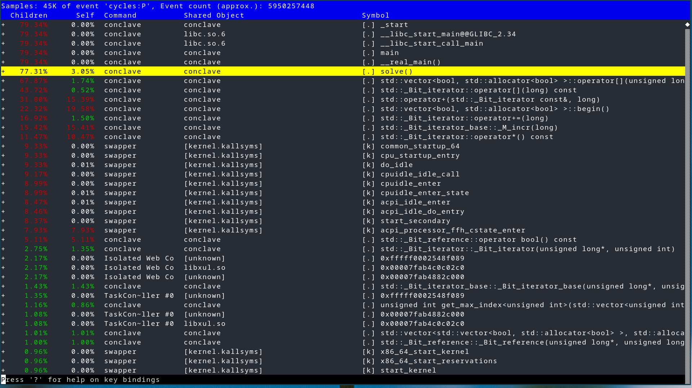
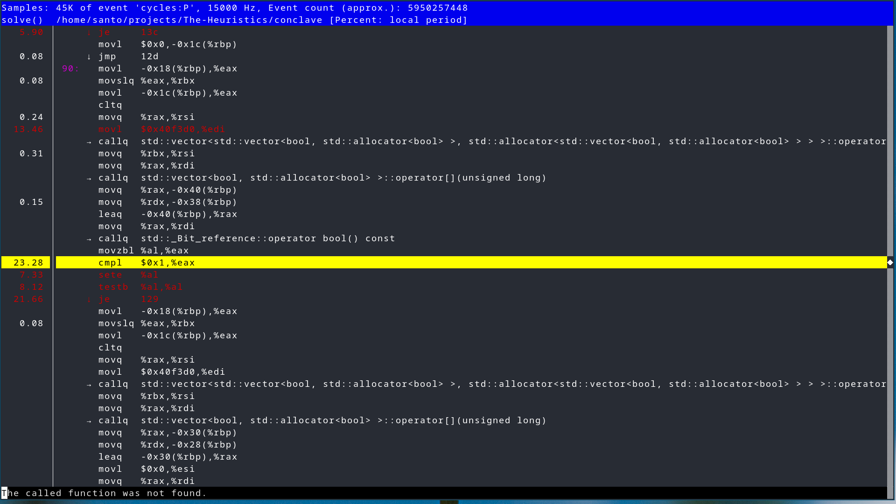
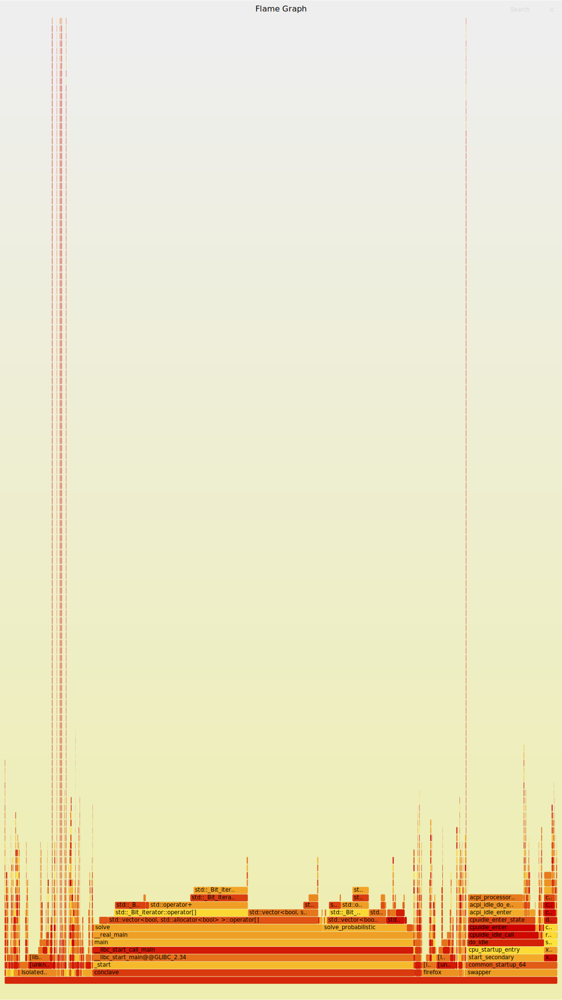
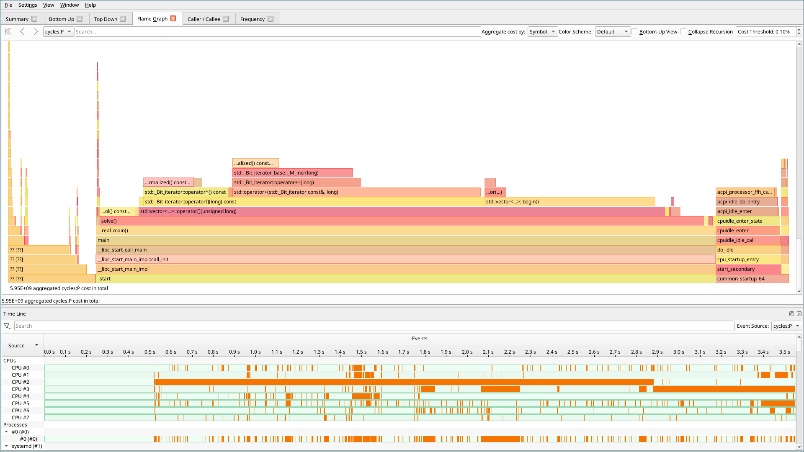
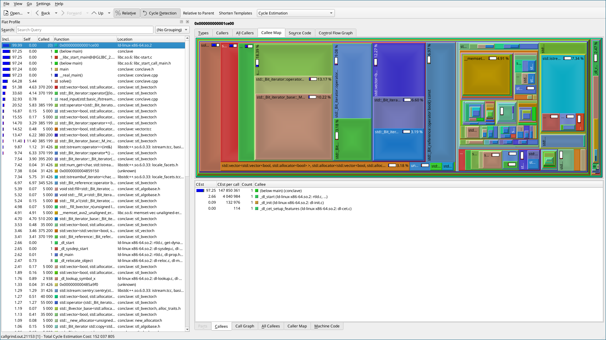

Giovanni's Diary > Subjects > Programming > Linux > Notes >
Performance analysis on Linux
In this document I will discuss several method to analyze the performance of a process on a Linux system. This page will be incrementally updated as I get more experience over time, with the aim to be a useful resource to everyone.
Introduction
Consider the following problem: given a native application, I want to know which parts or functions are impacting performance the most so that I have a better idea of where to look for when optimizing for performance.
Here I will only discuss native (compiled) applications. Interpreted programs should have their own tools for performance analysis, which falls outside of the scope of this document. Regardless, you could always benrchmark them as if the program was a black box.
Instead, what I am more interested in is to break apart an application and understand where execution time is spent and where can I increase performance. We will see some powerful tools and how to use them in the following chapters.
Perf
Perf is incredibly powerful tool for retrieving performance data on a
Linux system. The userspace tool is maintained in the kernel source
tree and it leverages perf events, which are in-kernel special
instrumentation that perf can hook into. You can get a list of all the
available events in your kernel via the command perf list.
We will now focus out attention on two perf subcommands: record and
report.
In order to record performance data , you can use perf record
<command>, or perf record -p <PID> -- sleep 10 to attach to a
certain process with PID <PID> for 10 seconds. This will generate a
file "perf.data" containing all the information after execution. You
can supply additional flags and attach to a running process via its
PID, refer to the man page of perf-record(1) for additional
information.
perf record -F 4000 -a -g <command-here>
In the above example, I used the following flags:
-F: set the frequency, you can set this to "max" if you want.-a: collect data from all CPUs-g: record call graphs
You can view the data using the following command:
perf report
If you compiled your program with debug information and with no optimization, perf will be able to retrieve names of functions and you will see something like this:

Figure 1: perf report output
From here you can explore a list of all the functions and the percentage of execution time they used. Additionally, you can inspect each function deeper and see which assembly instructions are taking more time to run.

Figure 2: assembly instructions and their usage
Perf is really powerful and I think it is worth learning in more detail. If you want to learn more, you can start with the perf examples from Brendan Gregg. You should also check out his other pages and his blog, he is an expert on performance analysis.
Flamegraphs
Flamegraphs are a different and more intuitive visualization of the same data: functions are represented as boxes and the width of the box indicates how much time was spent in that function. Therefore, longer boxes means longer execution time.
To generate those pictures, you can use the Flame Graph tool from Brendan Gregg. Usually, in order to produce flame graphs you need to perform 3 steps: record the data, fold the stacks and generate the final SVG. With perf, this looks like this:
perf record -F 4000 -a -g <command> perf script > out.perf stackcollapse-perf.pl out.perf > out.folded flamegraph.pl out.kern_folded > kernel.svg

Figure 3: example flame graph
Hotspot
There are various GUI applications to visualize perf data. One good example if Hotspot which shows you flame graphs and a timeline. It is really easy to play around, check it out.

Figure 4: hotspot screenshot
Valgrind + kcachegrind
Valgrind is another powerful program for debugging and profiling Linux executables. In the context of profiling, you can use the callgrind tool to collect the data:
valgrind --tool=callgrind --dump-instr=yes --simulate-cache=yes <program>
Then you can use a GUI tool like kcachegrind to visualize the data.

Figure 5: kcallgrind screenshot
Conclusions
We have seen a few solutions to get performance information of our program. If you have any suggestion or comments about the page, please reach out to me via email at at giovanni.santini@proton.me or message me on Mastodon @santo7@mastodon.social.
Travel: Linux Notes, Index